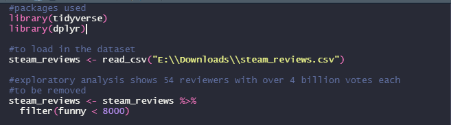
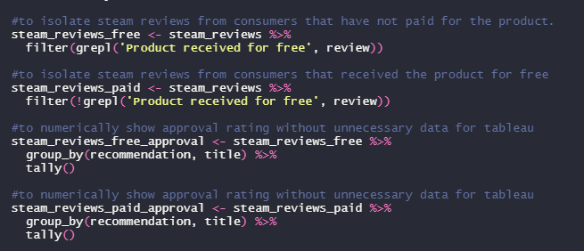
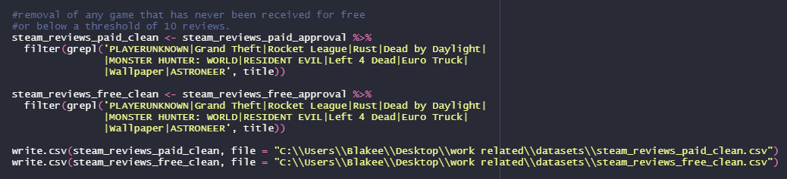

Steam User Recommendation Analysis
Does receiving a game for free impact the likelihood of a positive review?
Cleaning and transformation
Data collected through kaggle.
Upon downloading the appropriate dataset, I load my packages and CSV into R. From exploratory analysis, 54 reviewers had inaccurate datapoints which were removed.
After the dataset was verified to be clean I moved on to preparing the dataset for visualisation. Under the reviews variable(the user text input of the steam review), was a disclaimer stating whether a product was received for free: 'Product received for free'. I used this to separate paid reviews from free. From there I only grouped necessary data to improve Tableau performance.
Before exporting to Tableau, I filtered the data to games with atleast 10 reviews although the sample size isn't large enough in general to make any concrete assessments. This although minimal also decreases bloat in Tableau.
Once in tableau, I experimented with different ways to visualise the data. Considered a population graph with game title and recommendation on the Y axis, with percentage graphed on the X axis. After deciding the graph would be too cluttered in this format, I decided on two multi-set bar charts to clearly display the data.

Analysis and Biases
Every game listed received a higher positive recommendation percentage except three titles. Two of which(Euro Truck Simulator and Wallpaper Engine) had already achieved the highest rating of 100% at the time of data collection in both categories, while MONSTER HUNTER: WORLD at 77.5% for paid reviews dropped to 76% approval when received for free.
Greatest improvement, Grand Theft Auto: V starting at 58.3% for paid reviews increased to 82% when received for free.
As for biases, the dataset was very limited for many titles in the free category likely due to developers rarely or not offering free versions of their product. To combat this a minimum sample size of 10 was implemented.
In the future, I'll look to update this data using SteamAPI and BeautifulSoup to obtain a more complete and current dataset.